Yeni Haritalama Paketi
İnternet bağlantısı gerektirmeyen, gerekli verisini paket kurulum
dosyalarında taşıyan haritalama paketi revaçta yoktu, yazalım dedik -
simplegeomap. Açık yazılım olarak paylaşılıyor [1], ve PyPi
üzerinde kurulmaya hazır whl dosyası var, pip install simplegeomap
ile kurulabilir.
Simplegeomap temel ihtiyaçları basit, hızlı bir şekilde cevaplaması için yazılmıştır, bu ihtiyaçlar en azından bizim için istenen bir bölge içine düşen kıta, ülke sınırlarını çabuk bir şekilde çizebilmek, sınırlar dışında kalanları (mesela denizler) belli bir renkte vermek, yükseklik (dağlar) ve su alanları (nehir, göl gibi) haritalamanın, raporlamanın mümkün olması.
Smgm yuvarlak olan yerkürenin farklı şekildeki iki boyuta yansıtma tekniklerini kullanmıyor, en temel yaklaşım olan boylamı x, enlemi y kordinatı kabul edip veriyi direk kartezyen halde grafikleme tekniğini seçiyor. Bu yaklaşım yakın mesafeler ve objelerin genel yerlerini göstermesi açısından yeterlidir.
Kıtalar, Ülkeler
En temel çizimle başlayalım. Bir kordinatı merkez alıp belli bir odak (zoom) seviyesine göre o noktadaki kıta sınırlarını çizelim,
import simplegeomap as sm
sm.plot_continents(clat=0,clon=0,zoom=20)
plt.savefig('sm_01.jpg',quality=40)
Bu grafikleme için gereken veri smgm içinde mevcut continents.zip
dosyasından geliyor, kıta sınırları bir JSON içinde, 300K
büyüklüğünde. İnternet bağlantısına gerek yok.
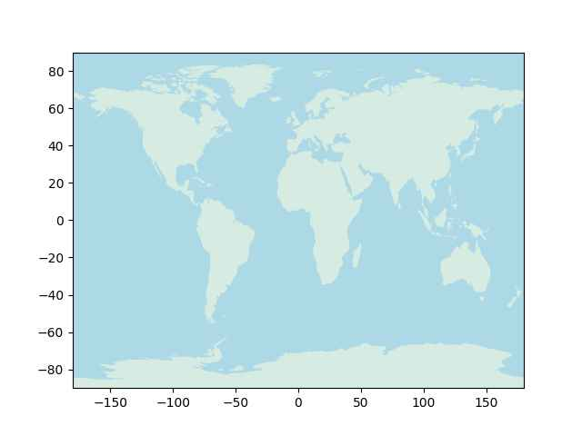
Farklı yerlere odaklanabiliriz,
sm.plot_continents(clat=30,clon=30,zoom=5)
plt.savefig('sm_02.jpg',quality=40)
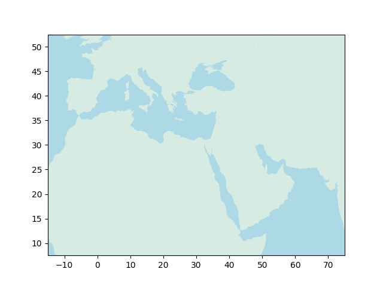
Smgm üstteki türden haritalama için iç renk ve dış renk (incolor,
outcolor) kavramlarını kullanır. Sınırları olan alanlar, kıtalar, ya
da ülkelerin içi incolor ile dışarıda kalan herşey outcolor ile
renklenir. Mesela iç kahverengimsi, dış daha koyu mavi istersek bunu
yapabiliriz,
sm.plot_continents(clat=30,clon=30,zoom=5,incolor='yellow',outcolor='blue')
plt.savefig('sm_03.jpg',quality=40)
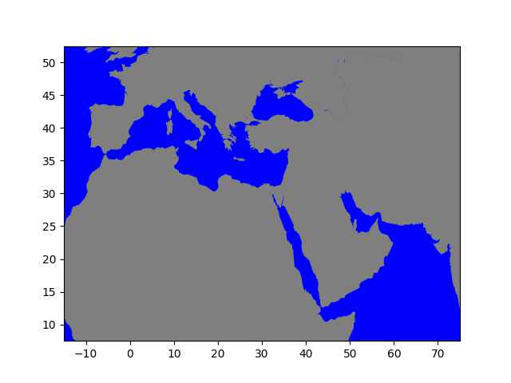
Olağan (default) değerler iç lightyellow dış lightblue. Kullanıcı
bu değerleri görüldüğü gibi değiştirebiliyor.
Ülkeler,
sm.plot_countries(clat=30,clon=30,zoom=2)
plt.savefig('sm_04.jpg',quality=40)
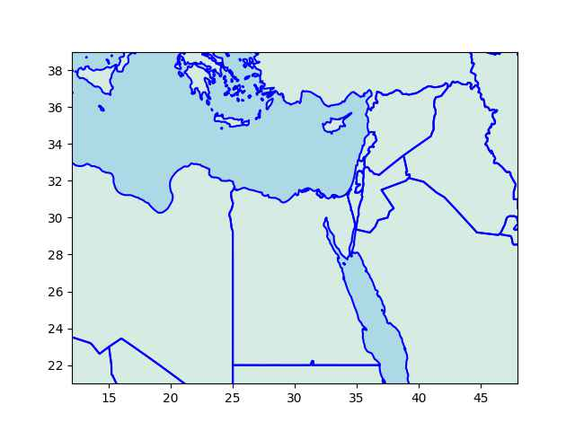
Üstte kodda tanımlanan bölgenin içine düşen tüm ülke sınırları
çizildi. Tekrar belirtmek gerekirse, kıta sınırları, ülke sınırlarını
içeren veri dosyaları paketin bir parçasıdır, bu dosyalar kurulum ile
beraber gelirler ve her an erişime hazır olacaklardır. Üstteki
grafikleme TM_WORLD_BORDERS-0.3.shp dosyasından geldi, ki bu veri
açık olarak paylaşılan bir veridir.
Paket grafikleme yaparken temel matplotlib kavramlarını kullanır,
zaten enlem/boylam bilgisini boylam/enlem olarak x,y noktaları olarak
kullandığımızı söylemiştik, bu durumda, eğer ek bilgileri haritaya
konuşlandırmak istersek bunu hala matplotlib yapılarıyla x,y vererek
yapabiliriz. Mesela üstteki haritada Mısır'da enlem=28, boylam=30
noktasını göstermek istiyorum, oraya bir kırmızı 'elmas' şekli
koyabilirim, altına yazı yazabilirim,
sm.plot_countries(clat=30,clon=30,zoom=2)
plt.plot(30,28,'rd')
plt.text(25,28.5,'Buraya dikkat')
plt.savefig('sm_05.jpg',quality=40)
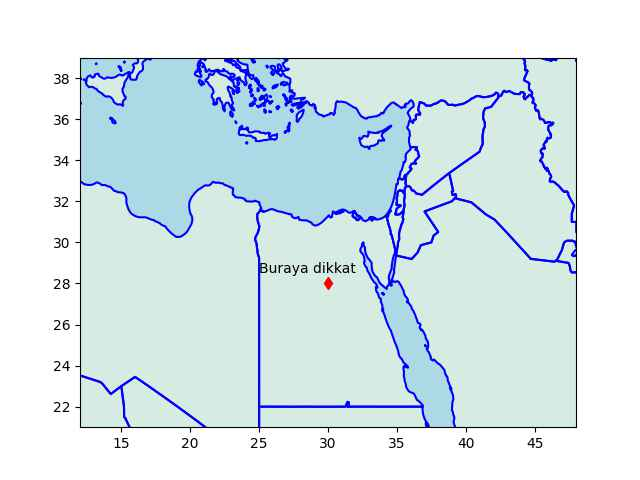
Muhakkak matplotlib paketinin içinde pek çok diğer çağrı var, mesela
oklarla bir vektör alanı quiver ile, her türlü plot şekli üstteki
grafikte plt ya da ax objeleri üzerinden direk kullanılabilirdi.
Ülke Renklendirmek
Ülkelerin ayrı renklerle gösterilmesi için ülkenin ISO3 koduna
eşlenen renk verisini bir sözlük içinde plot_countries çağrısına
verebiliriz. Tüm ISO3 kodları sm.get_country_name_iso3() çağrısı
ile alınabilir.
clat,clon = 40, 29; zoom = 2.0
colors = {"TUR": "red", "GRC": "yellow"}
sm.plot_countries(clat,clon,zoom,country_color=colors)
plt.savefig('sm_11.jpg')
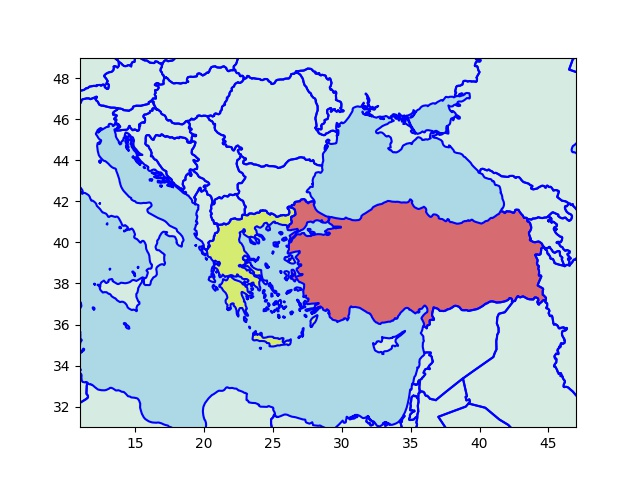
Odak, Uzak Ülkeler
Paket, verilen merkez nokta ve odak (zoom) üzerinden haritalama
yaparken verilen noktadan 'uzak' olan ülkeleri çizmemeye
uğraşıyor. Bunu odak parametresini bir uzaklığa çevirerek ve merkezi
uzaklığın dışına düşen ülkeleri atlayarak yapıyor. Fakat bazen bu
algoritma işlemeyebilir, mesela Rusya büyüklüğü sebebiyle bir ülkenin
sınırında olsa bile merkezi çok uzakta olduğu için 'dış bölge' olarak
kabul edilebilir, bu durumda force_include=['RUS'] ile bu ülkeyi
haritaya tekrar 'dahil' edebiliriz.
Bölgeler, Çizgiler
Bir kordinat listesi ile bir eğri, çizgi göstermek mümkündür. Çizgiyi temsil eden noktaları liste olarak smgm'e verince çizgi parçaları basılır. Eğer kapalı bölge istersem verilen listenin son kordinatı ilk kordinatına bağlı kabul edilecektir, ve alan kapatılacaktır.
pts = np.array([[40,10],[43,10], [43,15]])
fig, ax = plt.subplots()
sm.plot_countries(clat=40,clon=10,ax=ax,zoom=1.0)
sm.plot_line(pts,ax,color='red')
plt.savefig('sm_06.jpg',quality=40)
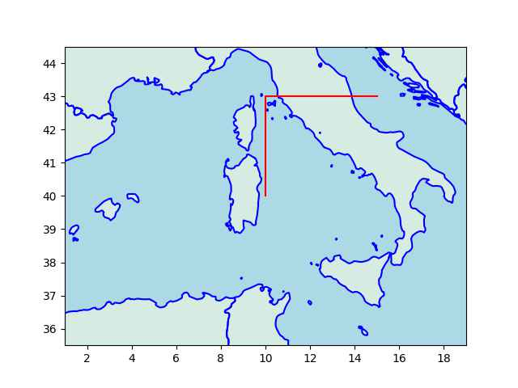
fig, ax = plt.subplots()
sm.plot_countries(clat=40,clon=10,ax=ax,zoom=1.0)
sm.plot_region(pts,ax,color='lightpink')
plt.savefig('sm_07.jpg',quality=40)
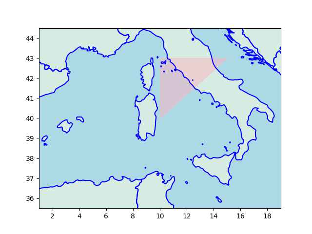
Aynı Harita İçin Birden Fazla smgm Çağrısı
Üstteki çağrıda birden fazla çağrı yaptık ama çıktı sadece bir
haritaydı. Bu durumda grafiği temsil eden Axis, Figure objelerini
matplotlib'den alıp onları simplegeomap çağrılarına ek parametreler
olarak geçtik. Bu şekilde paket hangi grafik üzerine gösterim
yapacağını anlamış oldu.
Her seferinde bunu yapmak gerekli değil, bazı temel çağrılar, mesela
plot_continents, ya da plot_countries gibi, eğer ax, fig objeleri
geçilmemişse bir tane olağan obje yaratabilir, ve ardından gelecek
plt çağrıları bu objeleri nasıl olsa kullanacaktır. Fakat daha
çetrefil kullanımlarda ax, fig bizim tarafımızdan yaratılmalı, ve her
arayüze geçilmeli. Mesela aynı grafik içinde birden fazla alt grafik
kullanımı bir çetrefil kullanım örneği, bu durumda gerekli alt
grafiğin ax, fig objeleri farklı çağrılara geçilebilir,
fig, ax = plt.subplots(2,figsize=(4,4))
sm.plot_countries(40,20,zoom=1,ax=ax[0])
sm.plot_countries(40,30,zoom=1,ax=ax[1])
plt.savefig('sm_08.jpg',quality=40)
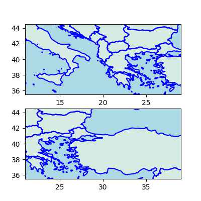
Nehirler, Göller
Odaklanan bölge içine düşen su öbekleri için plot_water var,
clat,clon = 48, 35
zoom = 1.0
fig, ax = plt.subplots()
sm.plot_countries(clat,clon,zoom=zoom,ax=ax,force_include=['RUS'])
sm.plot_water(clat,clon,zoom=zoom,ax=ax)
plt.savefig('sm_09.jpg',quality=40)
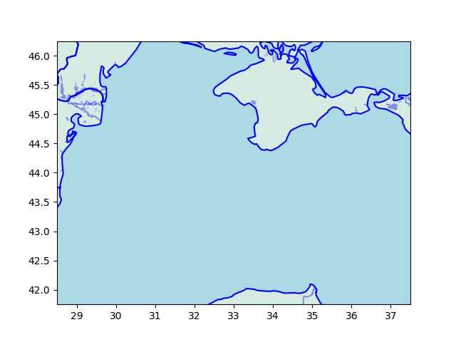
Kullanılan veri kaynağı hakkında daha detaylı bilgi şurada [3].
Dağlar, Yükseklik Verisi
clat,clon=39, 35; zoom = 1.0
fig, ax = plt.subplots()
sm.plot_countries(clat,clon,zoom=zoom,ax=ax)
sm.plot_elevation(clat,clon,zoom=zoom,ax=ax)
plt.savefig('sm_10.jpg',quality=40)
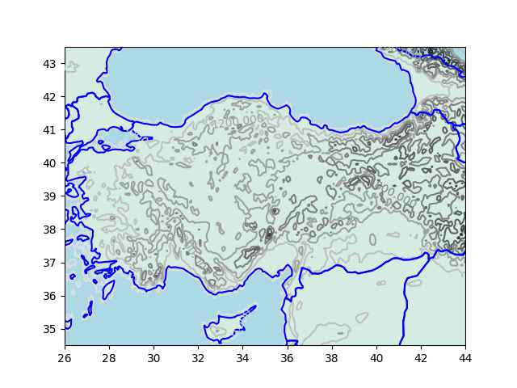
Eğer kontur seviyelerini biz tanımlamak istersek bunu levels=[100,200,..]
şeklinde bir parametre geçerek smgm kodlarına bildirebiliriz, bu durumda 100 metre,
200 metre, vs kontur çizgileri basılacaktır.
Yükseklik verisi [4] bağlantısından geliyor. Bu veri kaynağında 1 x 1
derece çözünürlüğündeki dikdörtgen köşelerinin yükseklik verisi
var. Veri ana a-p harfleriyle belirlenen bölgelere ayrılmıştır, mesela
Akdeniz bölgesinin çoğunluğu g bölgesi içine düşüyor. Her bölgenin
yükseklik verisi ayrı bir matris içinde, bu matrisleri bir önişlem
içinde alıp Numpy uyumlu bir npz matris dosyası içinde biz
kaydediyoruz. Bu önişlem kodu util.preprocess_GLOBE çağrısı içinde
bulunabilir. Yer tasarrufu amacıyla paket içinde sadece g10g.npz
verisini paylaştık, diğer bölgelerin verisi için all10g.zip dosyası
NOAA sitesinden indirilebilir, ve üstteki önişlem kodu çağrılınca
gerekli yükseklik matrisleri yaratılacaktır.
Yükseklik grafiklemesi odaklanan yere göre önce üstte bahsedilen ana
bölgeyi ve onun matrisini bulur, bu g10a.npz olabilir, g10b.npz
olabilir. Fakat veri ana a-p bölgelerine ayrılmış olsa bile hala ham
verinin tamamını hafızada işlemek külfetli olacağı için odak
parametresine göre gerekli yerlerini çekip çıkartıyoruz. Yükseklik
verisi aslında gri imaj verisi gibi görülebilir, grilik seviyesi
yükseklik seviyesi gibidir, değerler eşit aralıklı ızgara bazlıdır, bu
sebeple zaten hızlı işleyen görüntü işlem tekniklerini yükseklik için
kullanmak mümkündür. Herhangi bir bölgenin yükseklik verisini almak
mesela imaj bölgesini kesip çıkartmak (crop) ve o bölgeyi büyütmek
(resize) işlemi olarak yapılıyor.
Kaynaklar
(1) https://github.com/burakbayramli/simplegeomap
(2) https://pypi.org/project/simplegeomap/
(3) Haritalama, Nehirler, Göller
(4) GL Tiles
Yukarı